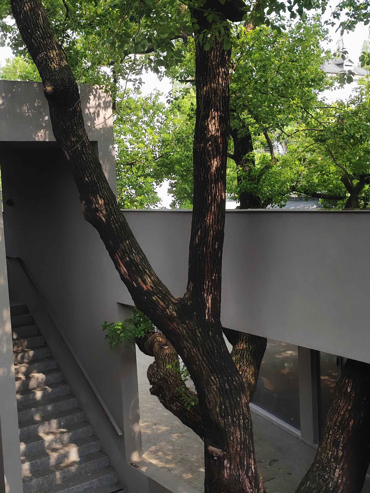
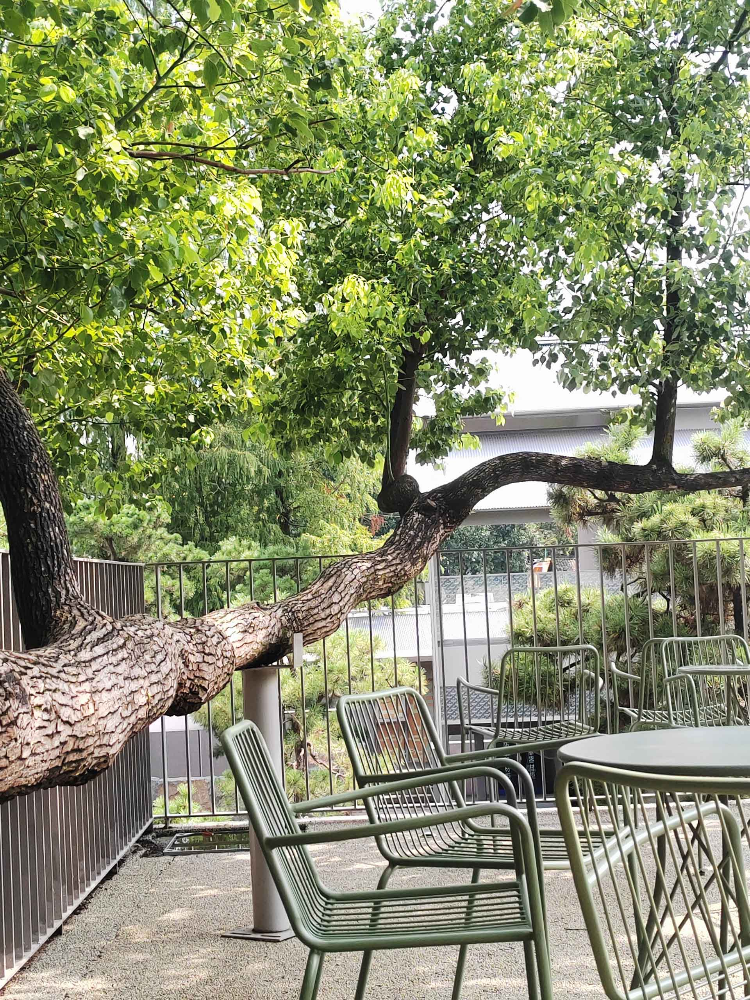
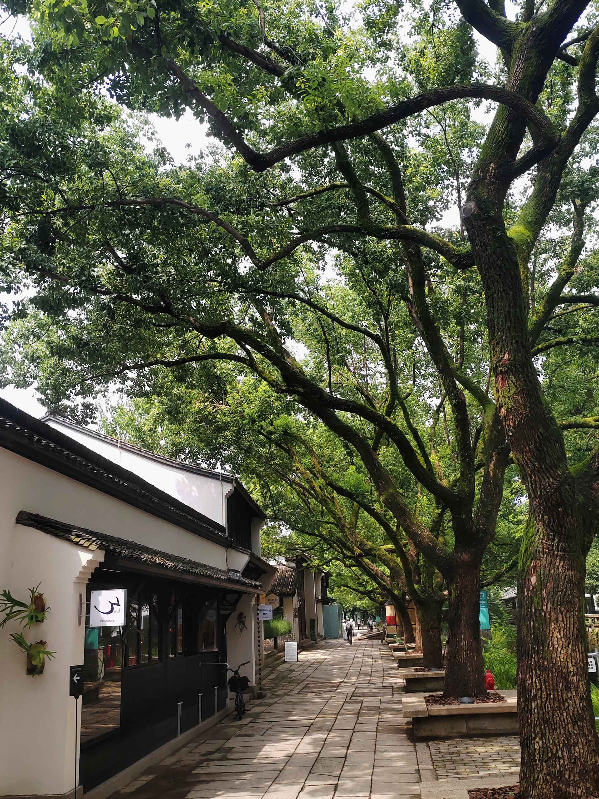
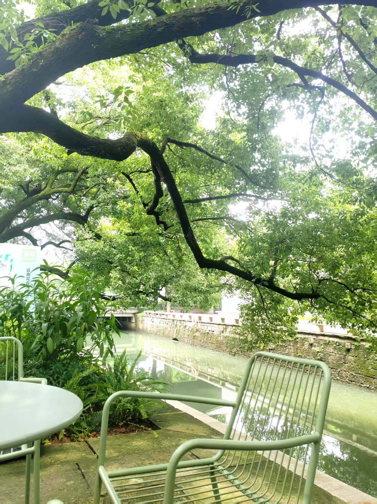
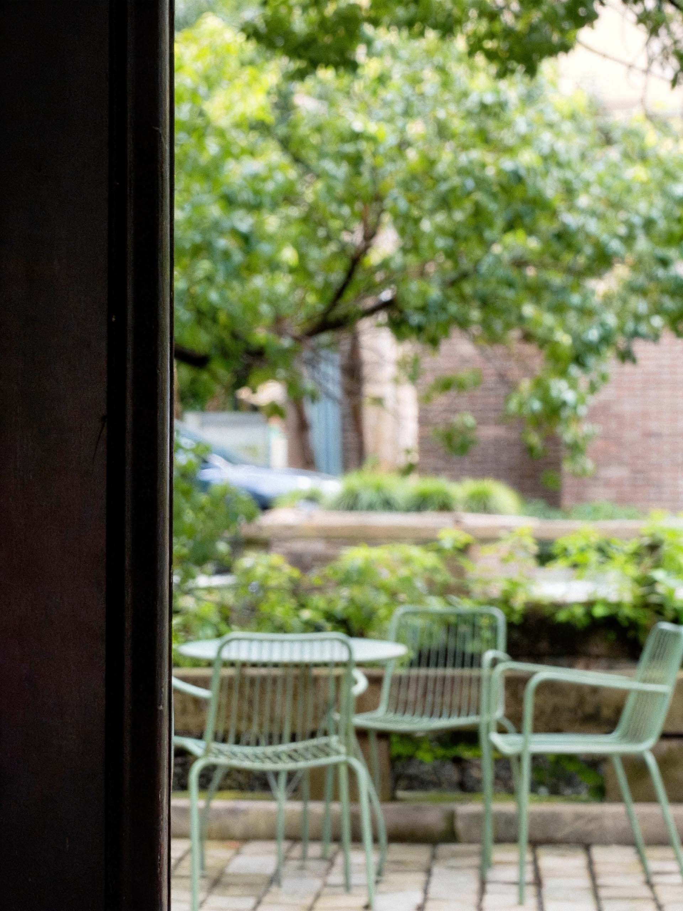
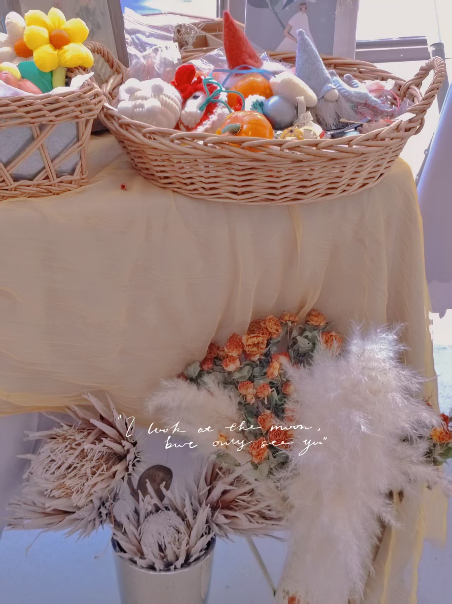
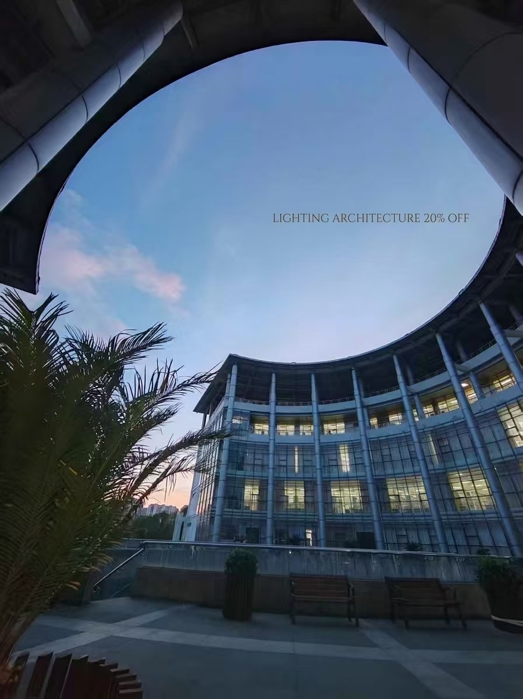

LEAVING 1129
A Visual Study of Space and Everyday Life
- Short Film
- Spatial Photography
- Visual Storytelling
系列影像
Photographs 05 张
Photograph 01
Photograph 04
Photograph 02
Photograph 03
Photograph 05VISUAL TRANSLATION
Transforming Ideas into Visual Stories
Visual 01
Visual 02

Visual 03
Visual 04
About · 关于
THE OBSERVER
我习惯观察人与空间之间的关系。
从商业视觉设计，到摄影与视频创作，我不断尝试用不同媒介记录真实场景中的细节、情绪与故事。
希望通过设计与影像，让日常经验被重新看见。
I observe the relationship between people and spaces.
Through visual design, photography and video, I explore different ways to capture details, emotions and stories from everyday experiences.